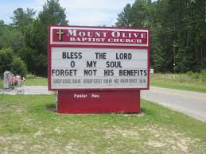
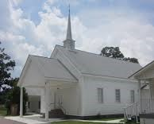
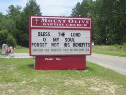
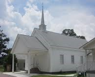

Contact Us
We hope you have enjoyed visiting our site. We would like to extend the invitation for you to attend our services and find out more about us. We also understand that you may have some unanswered questions. You have come to the right place
To the right, you will find the address and contact information. Please call or email us anytime. We are waiting to hear from you. Or you can check out our Twitter feed and find out the latest happenings.
If you need directions please click this link and enter your starting location Directions
Finally, please check out our connecting links at the bottom of the page. Like Mount Olive, they exist to help others.
For any other questions, please fill out and submit the form below